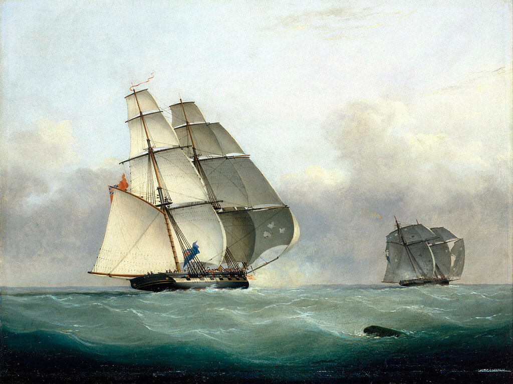
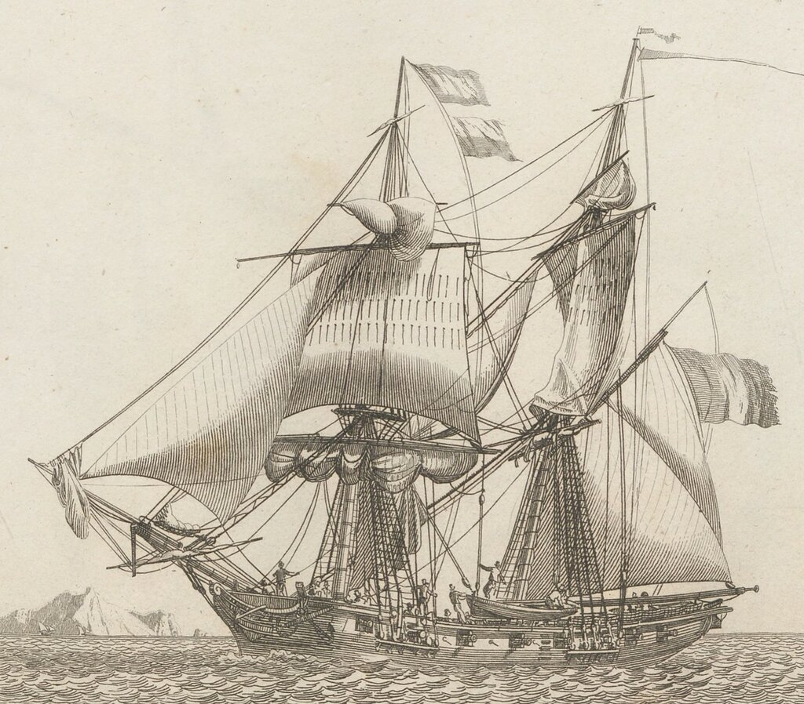
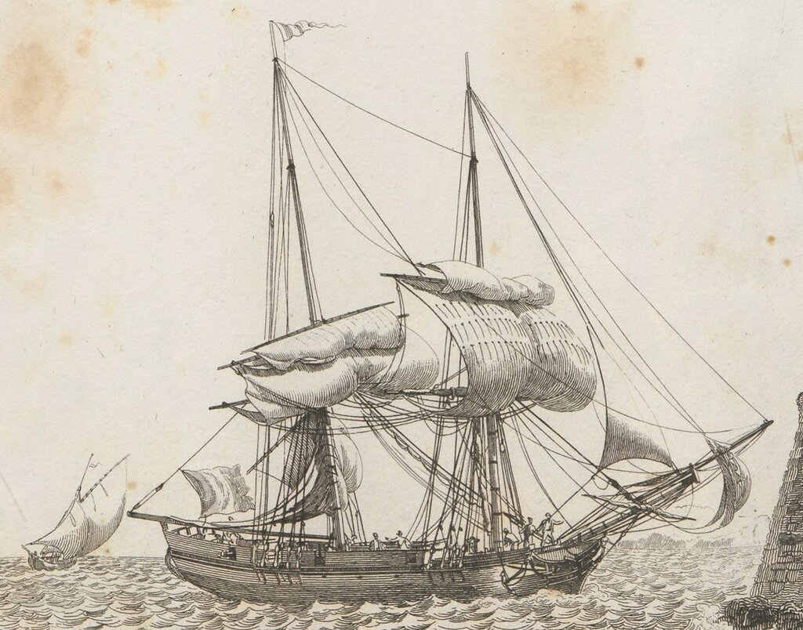
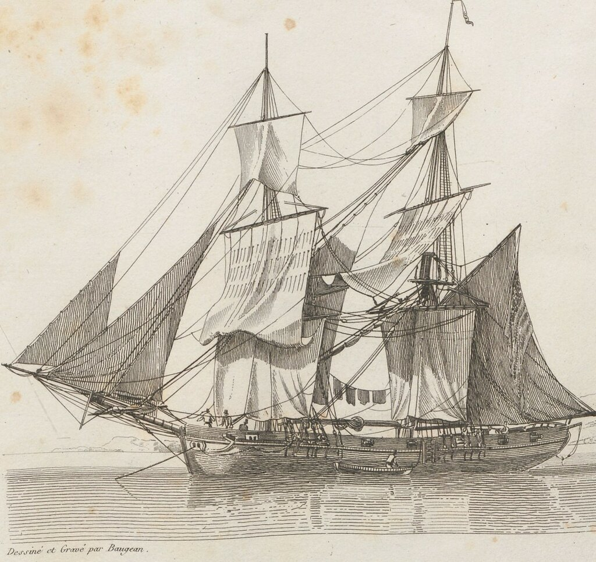

Захват работоргового судна Gabriel английским бригом Acorn, 6 июля 1841 г. Работа Nicolas Matthew Condy, National Maritime Museum, Лондон
Мы уже писали, что история знает два типа бригантин: парусно-гребные и чисто парусные. Вопрос о происхождении их названия очень просто решен в популярном журнале с огромным тиражом «Техника-молодежи»:
Можно заключить, что более ранняя бригантина получила свое название от слова "brigand" - разбойник, вторая, более поздняя, - от слова "бриг" (brig).
Все так просто. И зачем стулья ломать.
Но мы же не поведемся на такую простоту, не так ли? А попробуем разобраться, могла ли бригантина получить свое название от брига. (некоторые авторы даже подводят под эту теорию лексическую основу: мол, бригантина по размерам меньше брига, поэтому к слову бриг добавили уменьшительный суффикс, вроде как у Буратино, и получили новый корабль.)
В действительности же все наоборот.
Первое употребление термина бриг встречается в английском языке (а во все другие языки он у англичан был заимствован) в 1720 году. Когда, как мы помним из предыдущего поста, бригантины уже давно поднимали свои характерные паруса. В газете The London Gazette от 3 мая 1720 года появилась такая заметка:
Whereas the Ship Blessing, 50 Tuns Burthen, a Brigg lately belonging to St. Ives in Cornwall, with Pilchards, Herrings, and Wines, was on the 10th of January last past, with one Thomas Davies, Mate thereof, violently taken and carried out of the Road of Orotava in Theneriff, by the Lieutenant and some of the Crew of a Spanish Privateer, one Graff, Commander: If any one can inform John Hichens, Merchant of St. Ives, where tbe said Brigg and Mate is, on their Letter to him shall be satisfied for their Trouble.
Бриг водоизмещением 50 тонн, принадлежавший в последнее время поселению Сент-Айвс в Корнуолле, с грузом сардин, сельди и вина, со шкипером Томасом Дейвисом на борту, был 10 января насильственно захвачен и уведен с рейда Оротава на Тенерифе неким Граффом, коммандером, лейтенантом испанского приватира и несколькими членами его экипажа. Тот, кто сообщит письмом Джону Хайченсу, купцу из Сент-Айвса, о местопребывании указанного брига и шкипера, будет вознагражден за беспокойство.
The London Gazette , 3 May 1720 Issue: 5848 Page: 2
Газетчики любят сокращать слова; вот и в этом случае, наряду с бытовавшими уже cab, mob, zoo и им подобными появилось новое слово brigg. Лексикографы подсчитали, что с двумя g на конце оно было употреблено еще восемь раз, после чего то, что раньше у англичан было бригантиной (brigantine) стало называться бригом (brig).
Кораблестроительная наука не стояла на месте, и бриг в Англии естественно развивался. Так же, как развивались во флотах других морских держав бригантины. Таким образом разошлись дорожки эти двух кораблей. Напомним, что произошло это разветвление в 1720 году с легкой руки газетчиков. И так как развитие техники в ту эпоху не могло осуществляться без взаимопроникновения идей, то в английский флот просачивались корабли, которые у других европейцев продолжали называться бригантинами, а в флоты других европейцев поступали усовершенствованные английские бриги.
Французы долго сопротивлялись введению бригов в свой флот. И когда это все же произошло, моряки стали свидетелями твердой упертости французских академиков, не желающих ни под каким видом пускать английское слово в родной язык. Продолжалось это до конца 18 века, когда, наконец, французская блокада пала и в классификации появился французский бриг.

Французский бриг. 1826. Из альбома Jean-Jérôme Baugean, (1764-1819). Collection de toutes les espèces de bâtimens de guerre et de bâtimens marchands …
Не считая нескольких случайных цитат из английских текстов, первым у французов сознательным упоминанием термина бриг мы должны считать словарную статью в словаре Ромма (1792 год):
BRIC.s.m.Brig."Nom qui n'est que l’abregé de celui de brigantin qu'on donne plus généralement a un petit bâtiments, d’une mature & d'une voilure particulières.Voyez Brigantin. Si un bâtiment d'une classe différerite reçois un gréement semblable à celui de bric , on dit qu'il est gréé en bric.
Название корабля, которое является сокращением от бригантины; небольшое судно с характерными мачтами и парусами...
Romme, Dictionnaire de la marine française…
Нелепость нового термина сразу же была замечена критиками, в первую очередь из числа моряков. Ни французская орфография, ни французские же корни этого термина (из brigantin) не оправдывали конечное с, которое, к тому же, французами воспринималось как немое. Тогда в дело вступила Французская Академия и в 6-м издании ее Словаря за 1832-1835 году была узаконена форма brick. Тоже полная ерунда, но ввести во французскую речь английский brig было выше сил французских академиков. Кстати, именно в этом издании словаря Академии впервые появляется определение бригантины как чисто парусного судна.
BRIGANTIN. s. m. T. de Marine. Petit bâtiment à un ou deux mâts, gréé comme un brick, et qui n'a qu'un pont. Autrefois les brigantins allaient à voiles et à rames. Courir la mer, pirater avec un brigantinБригантин, небольшое судно с одной или двумя мачтами, с такелажем как у брига и с одной палубой….

Французская купеческая бригантина. Гравюра из альбома Jean-Jérôme Baugean (1826).
В предыдущих изданиях, в частности, в 5-м, которое вышло в 1798 году, парусный бригантин не упоминается:
BRIGANTIN. s. m. Sorte de petit vaisseau à voiles et à rames pour aller en course. Courir la mer avec un brigantin. Pirater avec un brigantin.
Прежде чем попасть во французский флот, бриг получил широкое распространение в английском и американском флотах, использовался как в качестве военного корабля, так и купеческого судна.

Купеческий американский бриг, занятый просушкой парусов. Гравюра из альбома Jean-Jérôme Baugean (1826).
В дальнейшем мы скажем еще несколько слов о парусном вооружении кораблей типа бригантины, прежде чем завершить эту тему.